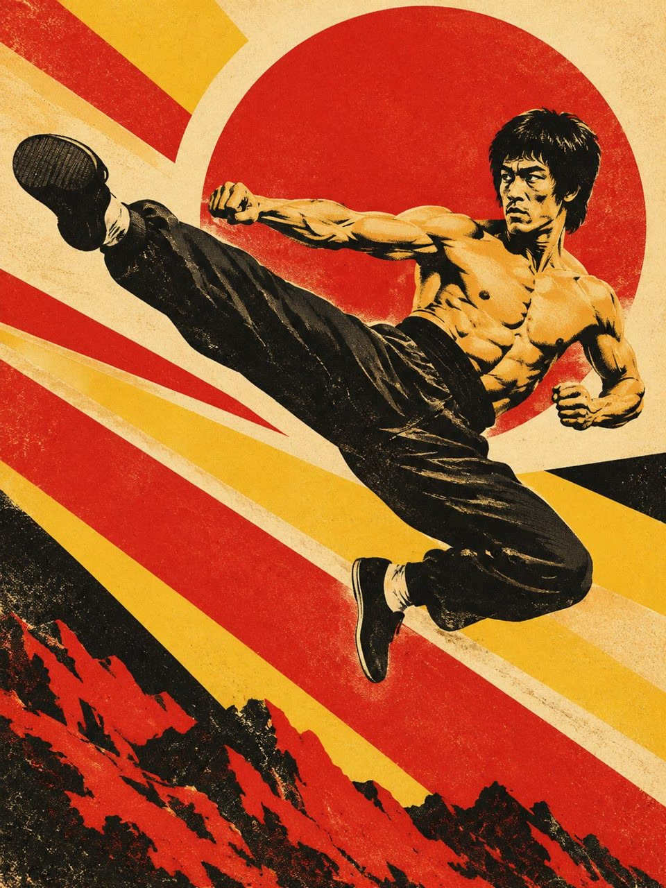

Screen-print grain propaganda poster (JSON)
GRN-014Grain / Filtergpt-image-2.5 flareby Alex Zhang (@Alex_allinai)2026-09-28

Retro 1970s screen-printed martial-arts poster: halftone grain, flat limited palette, diagonal kick pose.
Prompt
{
"image_request": {
"goal": "Create a retro propaganda-style martial arts poster with bold geometric graphics and high-contrast limited palette",
"creative_style": "1970s screen-printed propaganda poster meets martial arts movie key art, flat bold shapes, grainy halftone texture, high contrast silhouettes, dynamic diagonal composition",
"overall_theme": "dynamic martial arts action retro graphic",
"mood_vibe": "intense focused heroic energy",
"style_keywords": ["retro poster", "propaganda art", "screen print", "geometric abstraction", "martial arts", "high contrast", "limited palette", "grain texture", "halftone", "dynamic pose"],
"color_grading": {
"palette": "red, mustard yellow, black, off-white cream",
"lut": "vintage 1970s print poster",
"mood": "bold nostalgic intense"
}
}
}
Now with gpt-image-2.5, flare, sunburst, nano banana, and midjourney models. Try it: @neospark_HQ #AIArt #PromptSharing #DesignInspo #MartialArts #NeoSparkTags: screen print, halftone, limited palette